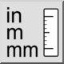

Převést jednotku výkresu
Panel nástrojů / Ikona:


Nabídka: Upravit > Převést jednotku výkresu
Zkratka: C, U
Příkazy: convertunit | cu
Panel nástrojů / Ikona:


Převede aktuální výkres na jinou výkresovou jednotku a odpovídajícím způsobem změní měřítko veškeré geometrie.